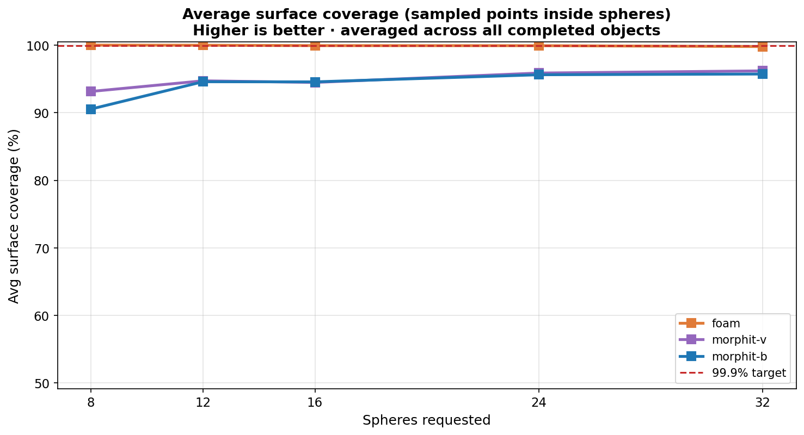
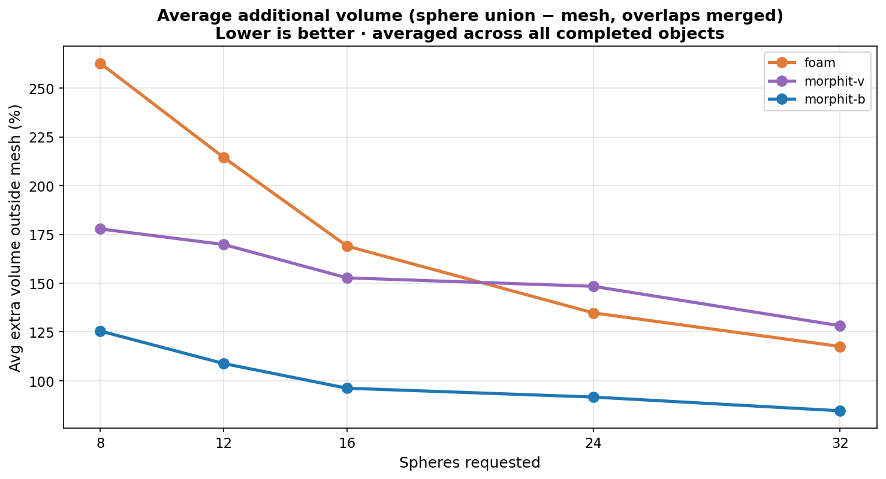

Compare foam (AMAA), MorphIt-V, and MorphIt-B on eight public CAD baseline meshes. Use the interactive viewer to step through original geometry and sphere overlays by method and sphere count n.
Step through CAD → foam → MorphIt-V → MorphIt-B with arrow keys. Select object and sphere count n.
Open viewer →
